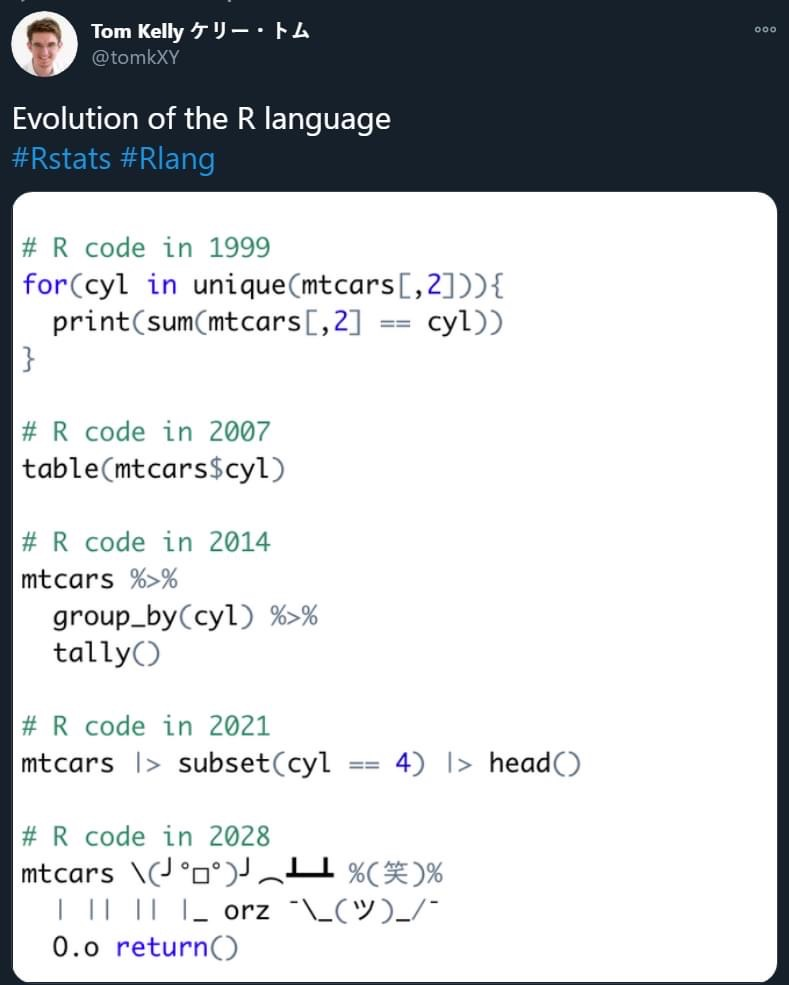
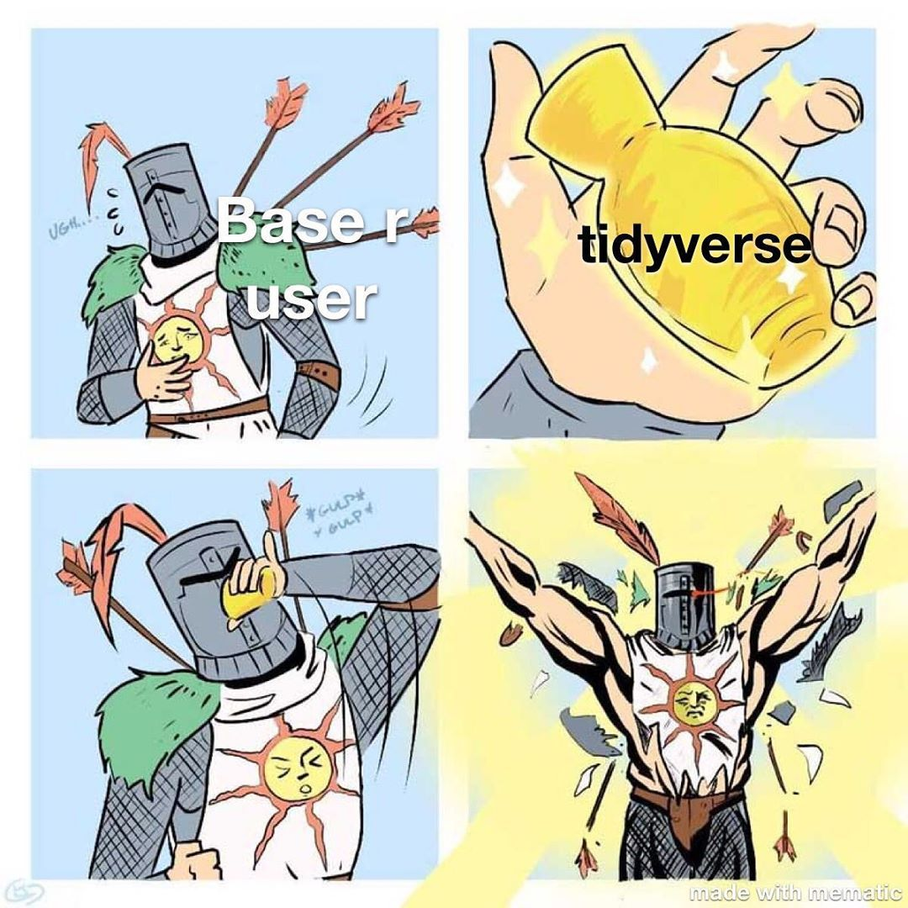
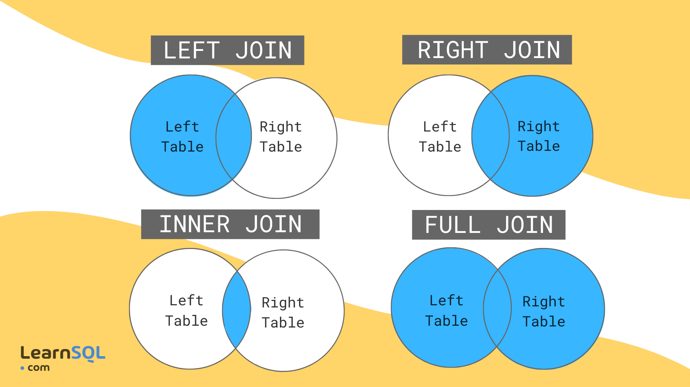
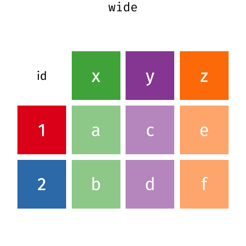

3 Tidyverse a manipulácia dát
3.1 Whose side are you on?

Doteraz sme pri kódovaní používali primárne base R. Ako názov naznačuje, base R je základom R od jeho začiatku a voľakedy bolo primárnym spôsobom písania kódu. Plynutím času však užívatelia začali vytvárať pre rôzne špecifické činnosti špecializované knižnice (opensource tomu naozaj výrazne pomáha). Niektoré z nich sa začali tak hojne využívať, že vytlačili base R na okraj, čo samozrejme pripravilo pôdu na polarizáciu R úžívateľov.
Jedna z týchto knižníc je tidyverse. tidyverse je knižnica, ktorá zlučuje viaceré knižnice vytvorené na manipuláciu a vizualizáciu dát (napr. dplyr, ggplot, tidyr) a stretnete sa s ňou veľmi často aj na Stack Overflow alebo iných fórach venovaných R.
Tidyverse sa stal tak obľubeným, že rozdelil užívateľov na dve skupiny:
- Base R fanatici - R treba poznať ako programovací jazyk, base R takým je, tvorí aj základ tidyverse, tidyverse nemá pre užívateľov zmysel, lebo potom nevedia robiť niektoré veci
- Tidyverse fanatici - base R je len pre geekov, ktorí programujú, bežný užívateľ nepotrebuje base R poznať, treba sa hlavne naučiť pracovať s tidyverse a pre data science base R netreba
Imho: Záleží od viacerých faktorov. Na čo chcete R využívať, či sa chcete naučiť aj základnú logiku programovania, či chcete robiť len základne čistenie dát a jednoduché analýzy a pod.. Ja sám som za to, aby ľudia poznali princípy jedného aj druhého a rozumeli im, ale svoj pracovný workflow nech si nastavia tak, aby im vyhovoval.

3.2 Pipe revolúcia
V roku 2012 sa na Stack Overflow objavila táto otázka - https://stackoverflow.com/questions/8896820/how-to-implement-fs-forward-pipe-operator-in-r, ktorá spustila revolúciu v práci s dátami v R. Išlo o jednoduché zlepšenie pracovného workflow, keď sa jeden z uživateľov pýtal:
How can you implement F#'s forward pipe operator in R?
The operator makes it possible to easily chain a sequence of calculations.
For example, when you have an input data and want to call functions foo and bar in sequence,
you can write:
data |> foo |> barNa túto otázku odpovedal profesor z McMaster University Ben Bolcker, ktorý očividne nevidel potenciál v takomto riešení:
I don't know how well it would hold up to any real use, but this seems (?) to do what you want,
at least for single-argument functions ..."%>%" <- function(x,f) do.call(f,list(x))
pi %>% sin
[1] 1.224606e-16
> pi %>% sin %>% cos
[1] 1
> cos(sin(pi))
[1] 1Tento princíp bol následne zapracovaný do magritrr knižnice a veľmi ho spopularizovala dplyr (tidyverse) knižnica. Ako to ale funguje?
3.2.1 %>% na sprehľadnenie kódu
head(mtcars, n = 8)## mpg cyl disp hp drat wt qsec vs am gear carb
## Mazda RX4 21.0 6 160.0 110 3.90 2.620 16.46 0 1 4 4
## Mazda RX4 Wag 21.0 6 160.0 110 3.90 2.875 17.02 0 1 4 4
## Datsun 710 22.8 4 108.0 93 3.85 2.320 18.61 1 1 4 1
## Hornet 4 Drive 21.4 6 258.0 110 3.08 3.215 19.44 1 0 3 1
## Hornet Sportabout 18.7 8 360.0 175 3.15 3.440 17.02 0 0 3 2
## Valiant 18.1 6 225.0 105 2.76 3.460 20.22 1 0 3 1
## Duster 360 14.3 8 360.0 245 3.21 3.570 15.84 0 0 3 4
## Merc 240D 24.4 4 146.7 62 3.69 3.190 20.00 1 0 4 2summary(rownames(mtcars))## Length Class Mode
## 32 character characterhead(summary(as.factor(rownames(mtcars))), n = 8)## AMC Javelin Cadillac Fleetwood Camaro Z28 Datsun 710
## 1 1 1 1
## Dodge Challenger Duster 360 Ferrari Dino Fiat 128
## 1 1 1 1Čo robí tento kód? Dalo by sa to aj inak? (otázka vnorených funkcií, čítania kódu)
install.packages("tidyverse")library(tidyverse)
mtcars %>%
rownames() %>%
as.factor() %>%
summary() %>%
head()## AMC Javelin Cadillac Fleetwood Camaro Z28 Datsun 710
## 1 1 1 1
## Dodge Challenger Duster 360
## 1 1Pipe mení filozofiu písania kódu. V zásade preberá výsledok kódu pred znakom %>% ako svoje vstupné dáta a aplikuje funkciu za znakom %>%.
Na prvých príkladoch to asi nie je úplne zreteľné, ale veľmi zlepšuje čitateľnosť kódu a zároveň otvára veľké možnosti pre funkcie knižnice dplyr pri práci s dátami.
POZNÁMKA
V tejto časti sa jej použitiu nebudeme venovať, ale v roku 2021 po R update na verziu 4.1 bola do base R zakompovaná takzvaná native pipe so znakom |>. Jej funkcia je podobná tidyverse (magritrr) pipe. Výhra tidyverse nad base R? :)
mtcars |>
rownames() |>
as.factor() |>
summary() |>
head()## AMC Javelin Cadillac Fleetwood Camaro Z28 Datsun 710
## 1 1 1 1
## Dodge Challenger Duster 360
## 1 13.3 Dplyr
dplyr sa vypracoval na jednu z najpopulárnejších knižníc na manipuláciu dát. Ako samotné podklady ku knižnici uvádzajú je to preto, že:
- je navrhnutý tak, že neumožňuje vykonávať niektoré manipulácie, lebo nedávajú zmysel a tým pádom núti rozmýšľať nad jednotlivými krokmi pri práci s dátami
- pracuje na princípe funkcií - slovies, ktoré sú intiutívne a odvodené od základných spôsobov práce s dátami
- je navrhnutý efektívne, čiže strávite menej času čakaním na počítač (niekedy to môžu byť hodiny a je to naozaj nepríjemne, čiže každá sekunda sa ráta)
Slovesá, ktorými sa používajú jednotlivé funkcie je možné rozdeliť do troch skupín:
- Riadky
- filter() vyberá riadky na základe údajov v stĺpcoch
- slice() vyberá riadky na základe umiestnenia
- arrange() mení poradie riadkov, usporiadava ich
- Stĺpce
- select() vyberá jednotlivé stĺpce na základe ich názvu alebo poradia
- rename() mení názvy stĺpcov
- mutate() mení hodnoty v stĺpcoch a vytvára nové stĺpce
- relocate() mení poradie stĺpcov
- Skupiny riadkov
- group_by() zoskupuje riadky na základe hodnôt v stĺpcoch
- summarize() sumarizuje hodnoty v rámci skupiny
3.3.1 Cheatsheets
Možno trochu neskôr, ale pri tidyverse sa žiada spomenúť, že každá knižnica má svoj cheatsheet so všetkými funkciami, ktoré obsahuje a návodom na ich použitie. V niektorých prípadoch je fajn nápad sa do takýchto cheatsheets pozrieť.
Príklady cheatsheets tu: https://www.rstudio.com/resources/cheatsheets/
3.3.2 filter()
filter Vám umožňuje vybrať určité riadky na základe konkrétnych podmienok. Prvým argumentom je dataset objekt (data frame, tibble), druhým podmienky, na základe ktorých sú vybrané riadky.
library(openxlsx) #ak nemáte nainštalovnú, tak treba najprv nainštalovať prostredníctvom install.packages("openxlsx")
sudy <- read.xlsx("./data/sudy_2020-2021.xlsx", 1)
head(sudy)## Court Year nJudges Assistant Judicial.officer Secretary
## 1 OS Bánovce nad Bebravou 2020 4.666667 6.75 4.000000 5.00000
## 2 OS Bánovce nad Bebravou 2021 5.000000 7.00 4.000000 5.00000
## 3 OS Bardejov 2020 9.583333 12.00 9.833333 6.00000
## 4 OS Bardejov 2021 10.833333 12.00 10.000000 6.00000
## 5 OS Bratislava II 2020 27.916667 34.00 24.916667 18.41667
## 6 OS Bratislava II 2021 24.500000 33.00 23.500000 18.50000
## Expenditure Business.input Civil.input Criminal.input Family.input
## 1 171806.6 55 503.144 807.0 249.168
## 2 201655.7 36 459.743 552.0 248.276
## 3 296897.8 92 1079.914 936.0 459.688
## 4 302411.3 118 985.370 865.5 403.984
## 5 736132.1 1074 4922.370 2728.5 989.836
## 6 638335.3 851 3896.741 2725.5 940.876
## Business.output Civil.output Criminal.output Family.output IncomingWeighted
## 1 52 474.516 738.0 229.444 1614.312
## 2 41 476.207 556.5 268.892 1296.019
## 3 109 1155.297 1039.5 461.672 2567.602
## 4 116 1126.777 871.5 437.888 2372.854
## 5 1037 4093.661 2815.5 936.416 9714.706
## 6 733 4414.365 2638.5 920.760 8414.117
## Incoming WeightedDecided Decided Region Pending
## 1 1782 1493.960 1660 KS Trenčín 690
## 2 1631 1342.599 1520 KS Trenčín 801
## 3 3147 2765.469 3136 KS Prešov 1489
## 4 3089 2552.165 3264 KS Prešov 1314
## 5 10397 8882.577 9434 KS Bratislava 5693
## 6 9433 8706.625 9677 KS Bratislava 5449Vyfiltrujeme si len súdy, ktoré sú pod KS Košice
sudyKE <- sudy %>%
filter(Region == "KS Košice") ##žiadne odkazovanie na názov dataset objektu, iba na premennú v ňom
sudyKE[,c(1:2,20)]## Court Year Region
## 1 OS Košice-okolie 2020 KS Košice
## 2 OS Košice-okolie 2021 KS Košice
## 3 OS Košice II 2020 KS Košice
## 4 OS Košice II 2021 KS Košice
## 5 OS Michalovce 2020 KS Košice
## 6 OS Michalovce 2021 KS Košice
## 7 OS Rožňava 2020 KS Košice
## 8 OS Rožňava 2021 KS Košice
## 9 OS Spišská Nová Ves 2020 KS Košice
## 10 OS Spišská Nová Ves 2021 KS Košice
## 11 OS Trebišov 2020 KS Košice
## 12 OS Trebišov 2021 KS Košice
## 13 OS Košice I 2020 KS Košice
## 14 OS Košice I 2021 KS KošiceTento filter v zásade zodpovedá tomuto base R kódu:
sudyKEbase <- sudy[sudy$Region == "KS Košice",]
sudyKEbase[,c(1:2,20)]## Court Year Region
## 29 OS Košice-okolie 2020 KS Košice
## 30 OS Košice-okolie 2021 KS Košice
## 31 OS Košice II 2020 KS Košice
## 32 OS Košice II 2021 KS Košice
## 43 OS Michalovce 2020 KS Košice
## 44 OS Michalovce 2021 KS Košice
## 67 OS Rožňava 2020 KS Košice
## 68 OS Rožňava 2021 KS Košice
## 75 OS Spišská Nová Ves 2020 KS Košice
## 76 OS Spišská Nová Ves 2021 KS Košice
## 83 OS Trebišov 2020 KS Košice
## 84 OS Trebišov 2021 KS Košice
## 97 OS Košice I 2020 KS Košice
## 98 OS Košice I 2021 KS KošiceMôžeme tiež vyfiltrovať tie, ktoré nie sú pod KS Bratislava, ani pod KS Trnava
sudybezBATT <- sudy %>%
filter(Region != "KS Bratislava", Region != "KS Trnava")
sudybezBATT[sample(1:nrow(sudybezBATT), 6), c(1:2, 20)] ## toto sa dá ale aj inak a onedlho si ukážeme ako## Court Year Region
## 37 OS Partizánske 2020 KS Trenčín
## 42 OS Považská Bystrica 2021 KS Trenčín
## 31 OS Námestovo 2020 KS Žilina
## 28 OS Martin 2021 KS Žilina
## 74 OS Košice I 2021 KS Košice
## 67 OS Zvolen 2020 KS Banská BystricaVytvorme si pre ukážku nejaké chýbajúce údaje a vyfiltrujme ich
sudybezBATT$missing <- ifelse(sudybezBATT$Court == "OS Nitra", NA, 1)
sum(is.na(sudybezBATT))## [1] 2notmissing <- sudybezBATT %>%
filter(is.na(missing) == F) #prečo takto? dá sa to aj inak?
sum(is.na(notmissing))## [1] 03.3.3 arrange()
Dáta samozrejme vieme aj zoradiť, na čo slúži funkcia arrange. Zoraďme si bratislavské súdy vzostupne na základe nápadu (počet prišlých vecí) v roku 2020.
sudyBA <- sudy %>%
filter(Region == "KS Bratislava", Year == 2020) %>%
arrange(Incoming)
sudyBA[, c(1:2, 17)]## Court Year Incoming
## 1 OS Pezinok 2020 3135
## 2 OS Malacky 2020 3967
## 3 OS Bratislava IV 2020 5079
## 4 OS Bratislava V 2020 8226
## 5 OS Bratislava III 2020 9504
## 6 OS Bratislava II 2020 10397
## 7 OS Bratislava I 2020 72267Lepšie by to bolo asi zostupne.
sudyBA <- sudyBA %>%
arrange(desc(Incoming))
sudyBA[, c(1:2, 17)] ## Court Year Incoming
## 1 OS Bratislava I 2020 72267
## 2 OS Bratislava II 2020 10397
## 3 OS Bratislava III 2020 9504
## 4 OS Bratislava V 2020 8226
## 5 OS Bratislava IV 2020 5079
## 6 OS Malacky 2020 3967
## 7 OS Pezinok 2020 3135arrange funkcia akceptuje aj viacero premenných, na základe ktorých usporadúva dáta. Funguje pri tom tak, že najprv zoradí riadky podľa prvej premennej a keď sú v nej rovnaké hodnoty, tak tie zoradí v rámci skupiny podľa druhej premennej. Ukážme si to:
sudyBA <- sudy %>%
filter(Region == "KS Bratislava") %>%
arrange(Year, desc(Incoming)) ## ako tu funguje desc()?
sudyBA[, c(1:2, 17)]## Court Year Incoming
## 1 OS Bratislava I 2020 72267
## 2 OS Bratislava II 2020 10397
## 3 OS Bratislava III 2020 9504
## 4 OS Bratislava V 2020 8226
## 5 OS Bratislava IV 2020 5079
## 6 OS Malacky 2020 3967
## 7 OS Pezinok 2020 3135
## 8 OS Bratislava I 2021 65984
## 9 OS Bratislava II 2021 9433
## 10 OS Bratislava III 2021 8998
## 11 OS Bratislava V 2021 7654
## 12 OS Bratislava IV 2021 4819
## 13 OS Malacky 2021 3990
## 14 OS Pezinok 2021 31663.3.4 slice()
slice funkcia vie byť nápomocná, ak potrebujete odstrániť prvé alebo posledné riadky (často pri exportoch z databázy) alebo vybrať určitú proporciu náhodných riadkov (napríklad pri delení datasetu na test a training pri ML)
Viete ale vybrať aj Vami preferované riadky.
sudy[, c(1:2, 17, 20)] %>% #jednoduchšie? stále to vieme spraviť aj inak
slice(1:10)## Court Year Incoming Region
## 1 OS Bánovce nad Bebravou 2020 1782 KS Trenčín
## 2 OS Bánovce nad Bebravou 2021 1631 KS Trenčín
## 3 OS Bardejov 2020 3147 KS Prešov
## 4 OS Bardejov 2021 3089 KS Prešov
## 5 OS Bratislava II 2020 10397 KS Bratislava
## 6 OS Bratislava II 2021 9433 KS Bratislava
## 7 OS Bratislava III 2020 9504 KS Bratislava
## 8 OS Bratislava III 2021 8998 KS Bratislava
## 9 OS Bratislava IV 2020 5079 KS Bratislava
## 10 OS Bratislava IV 2021 4819 KS Bratislavaslice_head a slice_tail vyberie prvé alebo posledné riadky.
sudy[, c(1:2, 17, 20)] %>%
slice_head(n = 6) ## ak nevyberieme n tak vyberie len prvý riadok (pri tail posledný)## Court Year Incoming Region
## 1 OS Bánovce nad Bebravou 2020 1782 KS Trenčín
## 2 OS Bánovce nad Bebravou 2021 1631 KS Trenčín
## 3 OS Bardejov 2020 3147 KS Prešov
## 4 OS Bardejov 2021 3089 KS Prešov
## 5 OS Bratislava II 2020 10397 KS Bratislava
## 6 OS Bratislava II 2021 9433 KS Bratislavasudy[, c(1:2, 17, 20)] %>%
slice_tail(n = 6)## Court Year Incoming Region
## 1 OS Trenčín 2020 19552 KS Trenčín
## 2 OS Trenčín 2021 19559 KS Trenčín
## 3 OS Trnava 2020 25287 KS Trnava
## 4 OS Trnava 2021 21757 KS Trnava
## 5 OS Žilina 2020 43832 KS Žilina
## 6 OS Žilina 2021 38509 KS Žilinaslice_sample vyberie náhodné riadky, treba len definovať ich počet alebo proporciu.
sudy[, c(1:2, 17, 20)] %>%
slice_sample(n = 10)## Court Year Incoming Region
## 1 OS Nové Zámky 2020 6652 KS Nitra
## 2 OS Bratislava I 2020 72267 KS Bratislava
## 3 OS Dunajská Streda 2021 5920 KS Trnava
## 4 OS Komárno 2020 5234 KS Nitra
## 5 OS Rimavská Sobota 2021 5055 KS Banská Bystrica
## 6 OS Revúca 2021 2545 KS Banská Bystrica
## 7 OS Bardejov 2020 3147 KS Prešov
## 8 OS Trenčín 2020 19552 KS Trenčín
## 9 OS Košice II 2020 14404 KS Košice
## 10 OS Lučenec 2020 5996 KS Banská Bystricasudy[, c(1:2, 17, 20)] %>%
slice_sample(prop = 0.1)## Court Year Incoming Region
## 1 OS Vranov nad Topľou 2020 3947 KS Prešov
## 2 OS Rožňava 2021 3686 KS Košice
## 3 OS Trenčín 2020 19552 KS Trenčín
## 4 OS Piešťany 2021 3041 KS Trnava
## 5 OS Kežmarok 2020 3054 KS Prešov
## 6 OS Nové Zámky 2021 6965 KS Nitra
## 7 OS Čadca 2020 3718 KS Žilina
## 8 OS Skalica 2020 2271 KS Trnava
## 9 OS Lučenec 2020 5996 KS Banská Bystrica
## 10 OS Pezinok 2020 3135 KS BratislavaOkrem týchto výberov riadkov, viete vybrať aj tie, ktoré majú maximálnu alebo minimálnu hodnotu v niektorej premennej.
sudy[, c(1:2, 17, 20)] %>%
slice_min(Incoming, n = 5)## Court Year Incoming Region
## 1 OS Bánovce nad Bebravou 2021 1631 KS Trenčín
## 2 OS Bánovce nad Bebravou 2020 1782 KS Trenčín
## 3 OS Stará Ľubovňa 2020 2052 KS Prešov
## 4 OS Dolný Kubín 2021 2099 KS Žilina
## 5 OS Stará Ľubovňa 2021 2101 KS Prešovsudy[, c(1:2, 17, 20)] %>%
slice_max(Incoming, n = 5)## Court Year Incoming Region
## 1 OS Banská Bystrica 2021 394457 KS Banská Bystrica
## 2 OS Banská Bystrica 2020 271334 KS Banská Bystrica
## 3 OS Bratislava I 2020 72267 KS Bratislava
## 4 OS Bratislava I 2021 65984 KS Bratislava
## 5 OS Žilina 2020 43832 KS Žilina3.3.5 select()
Od riadkov sa presúvame k funkciám pre samotné stĺpce. Určite sa často stretávate s datasetmi, ktoré majú veľké množstvo stĺpcov a sú neprehľadné. select je funkcia, ktorá vyberá stĺpce, ktoré chceme v datasete ponechať. Pracovať sa s ňou dá rôznymi spôsobmi (podobne ako pri base R).
sudy %>%
select(Court, Year, Incoming, Region) %>% #vyberie definované stĺpce
slice(1:6) ## Court Year Incoming Region
## 1 OS Bánovce nad Bebravou 2020 1782 KS Trenčín
## 2 OS Bánovce nad Bebravou 2021 1631 KS Trenčín
## 3 OS Bardejov 2020 3147 KS Prešov
## 4 OS Bardejov 2021 3089 KS Prešov
## 5 OS Bratislava II 2020 10397 KS Bratislava
## 6 OS Bratislava II 2021 9433 KS Bratislavasudy %>%
select(Court:Expenditure) %>% #vyberie definovaný rozsah stĺpcov
slice(1:6) ## Court Year nJudges Assistant Judicial.officer Secretary
## 1 OS Bánovce nad Bebravou 2020 4.666667 6.75 4.000000 5.00000
## 2 OS Bánovce nad Bebravou 2021 5.000000 7.00 4.000000 5.00000
## 3 OS Bardejov 2020 9.583333 12.00 9.833333 6.00000
## 4 OS Bardejov 2021 10.833333 12.00 10.000000 6.00000
## 5 OS Bratislava II 2020 27.916667 34.00 24.916667 18.41667
## 6 OS Bratislava II 2021 24.500000 33.00 23.500000 18.50000
## Expenditure
## 1 171806.6
## 2 201655.7
## 3 296897.8
## 4 302411.3
## 5 736132.1
## 6 638335.3sudy %>%
select(!(Court:Expenditure)) %>% #vyberie všetky stĺpce okrem definovaného stĺpca
slice(1:6) ## Business.input Civil.input Criminal.input Family.input Business.output
## 1 55 503.144 807.0 249.168 52
## 2 36 459.743 552.0 248.276 41
## 3 92 1079.914 936.0 459.688 109
## 4 118 985.370 865.5 403.984 116
## 5 1074 4922.370 2728.5 989.836 1037
## 6 851 3896.741 2725.5 940.876 733
## Civil.output Criminal.output Family.output IncomingWeighted Incoming
## 1 474.516 738.0 229.444 1614.312 1782
## 2 476.207 556.5 268.892 1296.019 1631
## 3 1155.297 1039.5 461.672 2567.602 3147
## 4 1126.777 871.5 437.888 2372.854 3089
## 5 4093.661 2815.5 936.416 9714.706 10397
## 6 4414.365 2638.5 920.760 8414.117 9433
## WeightedDecided Decided Region Pending
## 1 1493.960 1660 KS Trenčín 690
## 2 1342.599 1520 KS Trenčín 801
## 3 2765.469 3136 KS Prešov 1489
## 4 2552.165 3264 KS Prešov 1314
## 5 8882.577 9434 KS Bratislava 5693
## 6 8706.625 9677 KS Bratislava 5449sudy %>%
select(-(Court:Expenditure)) %>% #spraví to isté, len iný zápis
slice(1:6) ## Business.input Civil.input Criminal.input Family.input Business.output
## 1 55 503.144 807.0 249.168 52
## 2 36 459.743 552.0 248.276 41
## 3 92 1079.914 936.0 459.688 109
## 4 118 985.370 865.5 403.984 116
## 5 1074 4922.370 2728.5 989.836 1037
## 6 851 3896.741 2725.5 940.876 733
## Civil.output Criminal.output Family.output IncomingWeighted Incoming
## 1 474.516 738.0 229.444 1614.312 1782
## 2 476.207 556.5 268.892 1296.019 1631
## 3 1155.297 1039.5 461.672 2567.602 3147
## 4 1126.777 871.5 437.888 2372.854 3089
## 5 4093.661 2815.5 936.416 9714.706 10397
## 6 4414.365 2638.5 920.760 8414.117 9433
## WeightedDecided Decided Region Pending
## 1 1493.960 1660 KS Trenčín 690
## 2 1342.599 1520 KS Trenčín 801
## 3 2765.469 3136 KS Prešov 1489
## 4 2552.165 3264 KS Prešov 1314
## 5 8882.577 9434 KS Bratislava 5693
## 6 8706.625 9677 KS Bratislava 5449select funguje výborne aj s pomocnými funkciami ako starts_with, ends_with, matches a contains. Tieto funkcie vyberú väčšie množstvo stĺpcov na základe konkrétnych kritérií. V ?select sa môžete dozvedieť viac. Pre ukážku použijeme len prvé dve.
sudy %>%
select(ends_with("input")) %>% #vyberie všetky stĺpce s "input" na konci
slice(1:6) ## Business.input Civil.input Criminal.input Family.input
## 1 55 503.144 807.0 249.168
## 2 36 459.743 552.0 248.276
## 3 92 1079.914 936.0 459.688
## 4 118 985.370 865.5 403.984
## 5 1074 4922.370 2728.5 989.836
## 6 851 3896.741 2725.5 940.876sudy %>%
select(starts_with("Incoming")) %>% #vyberie všetky stĺpce s "Incoming" na začiatku
slice(1:6) ## IncomingWeighted Incoming
## 1 1614.312 1782
## 2 1296.019 1631
## 3 2567.602 3147
## 4 2372.854 3089
## 5 9714.706 10397
## 6 8414.117 9433sudy %>%
select(Court, starts_with("Incoming")) %>% #jednotlivé prístupy sa dajú kombinovať
slice(1:6) ## Court IncomingWeighted Incoming
## 1 OS Bánovce nad Bebravou 1614.312 1782
## 2 OS Bánovce nad Bebravou 1296.019 1631
## 3 OS Bardejov 2567.602 3147
## 4 OS Bardejov 2372.854 3089
## 5 OS Bratislava II 9714.706 10397
## 6 OS Bratislava II 8414.117 9433Posledná funckionalita funkcie select je, že dokáže premenovať jednotlivé premenné (takisto ako iné funkcie dplyr). Pri select to môže byť často nápomocné. Treba mať však na pamäti, že select dropne ostatné premenné, ktoré nie sú vybraté. Ak chcete iba premenovať premenné a ponechať ich vo Vašom datasete, tak použite funkciu rename.
sudy %>%
select(Súd = Court) %>%
slice(1:6)## Súd
## 1 OS Bánovce nad Bebravou
## 2 OS Bánovce nad Bebravou
## 3 OS Bardejov
## 4 OS Bardejov
## 5 OS Bratislava II
## 6 OS Bratislava IIsudy %>%
rename(Súd = Court) %>%
slice(1:6)## Súd Year nJudges Assistant Judicial.officer Secretary
## 1 OS Bánovce nad Bebravou 2020 4.666667 6.75 4.000000 5.00000
## 2 OS Bánovce nad Bebravou 2021 5.000000 7.00 4.000000 5.00000
## 3 OS Bardejov 2020 9.583333 12.00 9.833333 6.00000
## 4 OS Bardejov 2021 10.833333 12.00 10.000000 6.00000
## 5 OS Bratislava II 2020 27.916667 34.00 24.916667 18.41667
## 6 OS Bratislava II 2021 24.500000 33.00 23.500000 18.50000
## Expenditure Business.input Civil.input Criminal.input Family.input
## 1 171806.6 55 503.144 807.0 249.168
## 2 201655.7 36 459.743 552.0 248.276
## 3 296897.8 92 1079.914 936.0 459.688
## 4 302411.3 118 985.370 865.5 403.984
## 5 736132.1 1074 4922.370 2728.5 989.836
## 6 638335.3 851 3896.741 2725.5 940.876
## Business.output Civil.output Criminal.output Family.output IncomingWeighted
## 1 52 474.516 738.0 229.444 1614.312
## 2 41 476.207 556.5 268.892 1296.019
## 3 109 1155.297 1039.5 461.672 2567.602
## 4 116 1126.777 871.5 437.888 2372.854
## 5 1037 4093.661 2815.5 936.416 9714.706
## 6 733 4414.365 2638.5 920.760 8414.117
## Incoming WeightedDecided Decided Region Pending
## 1 1782 1493.960 1660 KS Trenčín 690
## 2 1631 1342.599 1520 KS Trenčín 801
## 3 3147 2765.469 3136 KS Prešov 1489
## 4 3089 2552.165 3264 KS Prešov 1314
## 5 10397 8882.577 9434 KS Bratislava 5693
## 6 9433 8706.625 9677 KS Bratislava 54493.3.6 mutate()
Kódovanie premenných sme si ukázali prostredníctvom base R. Kódovať premenné a pridávať stĺpce sa dá ale aj prostredníctvom dplyr. Na toto budete potrebovať mutate funkciu.
sudy %>%
mutate(Incoming100 = Incoming/100) %>%
select(Court, Incoming100) %>%
slice(1:6) #tu môžete vidieť, v čom je tidyverse silný. Úprava dát sa deje na zopár riadkoch.## Court Incoming100
## 1 OS Bánovce nad Bebravou 17.82
## 2 OS Bánovce nad Bebravou 16.31
## 3 OS Bardejov 31.47
## 4 OS Bardejov 30.89
## 5 OS Bratislava II 103.97
## 6 OS Bratislava II 94.33Výhodou mutate je, že sa viete už v rámci funkcie odkazovať na Vami vytvorené premenné.
sudy %>%
mutate(Incoming100 = Incoming/100,
LogIncoming100 = log(Incoming100)) %>%
select(Court, Incoming100, LogIncoming100) %>%
slice(1:6)## Court Incoming100 LogIncoming100
## 1 OS Bánovce nad Bebravou 17.82 2.880321
## 2 OS Bánovce nad Bebravou 16.31 2.791778
## 3 OS Bardejov 31.47 3.449035
## 4 OS Bardejov 30.89 3.430433
## 5 OS Bratislava II 103.97 4.644102
## 6 OS Bratislava II 94.33 4.546799Ak chcete ponechať len novovytvorené stĺpce, tak použite funkciu transmute.
sudy %>%
transmute(Incoming100 = Incoming/100,
LogIncoming100 = log(Incoming100)) %>%
slice(1:6)## Incoming100 LogIncoming100
## 1 17.82 2.880321
## 2 16.31 2.791778
## 3 31.47 3.449035
## 4 30.89 3.430433
## 5 103.97 4.644102
## 6 94.33 4.5467993.3.7 if_else() a case_when
mutate funkcia pracuje veľmi dobre s if_else a case_when funkciami. ifelse sme si ukazovali už pri base R. Dplyr v zásade vytvoril svoju vlastnú funkciu, ktorá robí to isté, ale mala by byť rýchlejšia a striknejšia (napríklad vypíše chybu, ak nesedí typ premenných). case_when možno poznáte z SQL. Ide o funkciu, ktorá priradí hodnotu ku kategóriám, keď ich je viac ako 2.
sudy %>%
mutate(Viacako3000 = if_else(Incoming > 3000, 1, 0)) %>%
slice_sample(n = 6) %>%
select(Court, Year, Incoming, Viacako3000)## Court Year Incoming Viacako3000
## 1 OS Skalica 2021 2337 0
## 2 OS Lučenec 2021 5889 1
## 3 OS Kežmarok 2021 3156 1
## 4 OS Senica 2020 3401 1
## 5 OS Trnava 2020 25287 1
## 6 OS Košice-okolie 2020 8937 1sudy %>%
mutate(SudVelkost = case_when(nJudges < 9 ~ "Malý",
nJudges >= 9 & nJudges < 17 ~ "Stredný",
nJudges >= 17 ~ "Veľký")) %>%
slice_sample(n = 6) %>%
select(Court, Year, nJudges, SudVelkost )## Court Year nJudges SudVelkost
## 1 OS Košice II 2021 31.750000 Veľký
## 2 OS Bratislava III 2020 25.250000 Veľký
## 3 OS Partizánske 2021 6.000000 Malý
## 4 OS Levice 2021 12.250000 Stredný
## 5 OS Spišská Nová Ves 2020 14.583333 Stredný
## 6 OS Bardejov 2020 9.583333 StrednýPri case_when si treba dávať pozor na poradie jednotlivých podmienok, ktoré definujú kategórie. case_when vyhodnocuje podmienky v rade za sebou a keď už raz je jedna z nich splnená a kategória definovaná, tak pri vyhodnocovaní ďalšej je takéto pozorovanie preskakované.
sudy %>%
mutate(SudVelkost = case_when(nJudges < 9 ~ "Malý",
nJudges >= 9 & nJudges < 17 ~ "Stredný",
nJudges >= 17 ~ "Veľký",
Court == "OS Bratislava I" | Court == "OS Košice I" ~ "Registrový")) %>%
filter(Court == "OS Bratislava I"| Court == "OS Košice I" ) %>%
select(Court, Year, nJudges, SudVelkost )## Court Year nJudges SudVelkost
## 1 OS Bratislava I 2020 35.66667 Veľký
## 2 OS Bratislava I 2021 34.75000 Veľký
## 3 OS Košice I 2020 33.25000 Veľký
## 4 OS Košice I 2021 29.25000 Veľkýsudy %>%
mutate(SudVelkost = case_when(Court == "OS Bratislava I" | Court == "OS Košice I" ~ "Registrový",
nJudges < 9 ~ "Malý",
nJudges >= 9 & nJudges < 17 ~ "Stredný",
nJudges >= 17 ~ "Veľký")) %>%
filter(Court == "OS Bratislava I"| Court == "OS Košice I" ) %>%
select(Court, Year, nJudges, SudVelkost )## Court Year nJudges SudVelkost
## 1 OS Bratislava I 2020 35.66667 Registrový
## 2 OS Bratislava I 2021 34.75000 Registrový
## 3 OS Košice I 2020 33.25000 Registrový
## 4 OS Košice I 2021 29.25000 Registrový3.3.8 relocate()
Pri mutate funkcii, ktorá vytvára viaceré nové premenné je taktiež dobré spomenúť aj jednoduchú relocate funkciu. Jej syntax je podobná ako pri select funkcii.
sudy %>%
select(1:15) %>%
relocate(Business.output:Family.output, .before = ends_with("input")) %>%
slice(1:6)## Court Year nJudges Assistant Judicial.officer Secretary
## 1 OS Bánovce nad Bebravou 2020 4.666667 6.75 4.000000 5.00000
## 2 OS Bánovce nad Bebravou 2021 5.000000 7.00 4.000000 5.00000
## 3 OS Bardejov 2020 9.583333 12.00 9.833333 6.00000
## 4 OS Bardejov 2021 10.833333 12.00 10.000000 6.00000
## 5 OS Bratislava II 2020 27.916667 34.00 24.916667 18.41667
## 6 OS Bratislava II 2021 24.500000 33.00 23.500000 18.50000
## Expenditure Business.output Civil.output Criminal.output Family.output
## 1 171806.6 52 474.516 738.0 229.444
## 2 201655.7 41 476.207 556.5 268.892
## 3 296897.8 109 1155.297 1039.5 461.672
## 4 302411.3 116 1126.777 871.5 437.888
## 5 736132.1 1037 4093.661 2815.5 936.416
## 6 638335.3 733 4414.365 2638.5 920.760
## Business.input Civil.input Criminal.input Family.input
## 1 55 503.144 807.0 249.168
## 2 36 459.743 552.0 248.276
## 3 92 1079.914 936.0 459.688
## 4 118 985.370 865.5 403.984
## 5 1074 4922.370 2728.5 989.836
## 6 851 3896.741 2725.5 940.8763.3.9 summarize() (spolu s group_by())
Funkcia summarize zagreguje dataset do jedného riadku (bez použitia group_by). Využíva sa hlavne pri počítaní sumárných hodnôt v rámci kategórií (za použitia group_by). Môžete si ju predstaviť ako spôsob, akým z databázovej tabuľky spravíte kontingenčnú.
sudy %>%
summarize(napadSR = sum(Incoming))## napadSR
## 1 1580274Takto to ale nedáva veľmi zmysel, keďže v datasete máme dva rôzne roky. Optimálne by sme chceli získať celkový nápad za jednotlivé roky zvlášť. Na to nám slúži funkcia group_by, ktorá združuje dáta do skupín definovaných premennými a výpočty robí nad týmito skupinami.
sudy %>%
group_by(Year) %>%
summarize(napadSR = sum(Incoming)) %>%
ungroup() #niekedy vzniká problém pri používaní ďalších funkcií, ktoré berú dataset ako zoskupený, preto je fajn zvyk použiť ungroup funkciu## # A tibble: 2 x 2
## Year napadSR
## <dbl> <dbl>
## 1 2020 736160
## 2 2021 844114V group_by sa dá definovať viacero premenných, na základe ktorých budú rozdelené dáta. Platí pritom pravidlo, že čím viac zoskupovacích premenných, tým rozdrobenejší dataset.
sudy %>%
group_by(Year, Region) %>%
summarize(NapadRegion = sum(Incoming),
PriemerNapadRegion = mean(Incoming),
MedianNapadRegion = median(Incoming),
SDNapadRegion = sd(Incoming),
MinNapadRegion = min(Incoming),
MaxNapadRegion = max(Incoming))## `summarise()` has grouped output by 'Year'. You can override using the
## `.groups` argument.## # A tibble: 16 x 8
## # Groups: Year [2]
## Year Region NapadRegion Prieme~1 Media~2 SDNap~3 MinNa~4 MaxNa~5
## <dbl> <chr> <dbl> <dbl> <dbl> <dbl> <dbl> <dbl>
## 1 2020 KS Banská Bystrica 301225 37653. 4777 94432. 2469 271334
## 2 2020 KS Bratislava 112575 16082. 8226 24932. 3135 72267
## 3 2020 KS Košice 74321 10617. 7620 7718. 3586 26431
## 4 2020 KS Nitra 48759 9752. 5954 9964. 3469 27450
## 5 2020 KS Prešov 49824 6228 3547 7667. 2052 24983
## 6 2020 KS Trenčín 37739 6290. 4086 6686. 1782 19552
## 7 2020 KS Trnava 47068 7845. 4618 8764. 2271 25287
## 8 2020 KS Žilina 64649 9236. 3718 15299. 2127 43832
## 9 2021 KS Banská Bystrica 425030 53129. 4906. 137925. 2545 394457
## 10 2021 KS Bratislava 104044 14863. 7654 22676. 3166 65984
## 11 2021 KS Košice 73088 10441. 7702 7722. 3686 26651
## 12 2021 KS Nitra 50108 10022. 6530 9894. 3666 27572
## 13 2021 KS Prešov 49692 6212. 3490 7646. 2101 24916
## 14 2021 KS Trenčín 38577 6430. 4502 6646. 1631 19559
## 15 2021 KS Trnava 43753 7292. 4702. 7325. 2337 21757
## 16 2021 KS Žilina 59822 8546 3892 13266. 2099 38509
## # ... with abbreviated variable names 1: PriemerNapadRegion,
## # 2: MedianNapadRegion, 3: SDNapadRegion, 4: MinNapadRegion,
## # 5: MaxNapadRegionTakto si vieme vytvoriť aj sumarizačnú tabuľku. Čo nám tam ale chýba?
3.3.10 count() a n()
Dplyr obsahuje aj svoju funkciu count. Táto funkcia Vám umožňuje rýchlo vypočítať počty v rámci jednej a viac premenných. Funguje takto: df %>% count(a, b), čo je v zásade ekvivalent tohto: df %>% group_by(a, b) %>% summarize(n = n())
sudy %>%
count(Court) %>% #Výsledok je 2 lebo každý súd sa opakuje 2x pre 2 roky
slice(1:6)## Court n
## 1 OS Bánovce nad Bebravou 2
## 2 OS Banská Bystrica 2
## 3 OS Bardejov 2
## 4 OS Bratislava I 2
## 5 OS Bratislava II 2
## 6 OS Bratislava III 2sudy %>%
count(Court, Year) %>%
slice(1:6)## Court Year n
## 1 OS Bánovce nad Bebravou 2020 1
## 2 OS Bánovce nad Bebravou 2021 1
## 3 OS Banská Bystrica 2020 1
## 4 OS Banská Bystrica 2021 1
## 5 OS Bardejov 2020 1
## 6 OS Bardejov 2021 1S count funkciou je spojená tally funkcia. tally narozdiel od count počíta s tým, že užívateľ už definoval grouping. tally v zásade na pozadí robí len toto: df %>% summarize(n = n())
sudy %>%
tally(Court) # toto nefungujesudy %>%
group_by(Court) %>%
tally() %>% # toto už áno
ungroup()## # A tibble: 54 x 2
## Court n
## <chr> <int>
## 1 OS Bánovce nad Bebravou 2
## 2 OS Banská Bystrica 2
## 3 OS Bardejov 2
## 4 OS Bratislava I 2
## 5 OS Bratislava II 2
## 6 OS Bratislava III 2
## 7 OS Bratislava IV 2
## 8 OS Bratislava V 2
## 9 OS Brezno 2
## 10 OS Čadca 2
## # ... with 44 more rows
## # i Use `print(n = ...)` to see more rowsAk nechcete, aby tieto funkcie používali summarize, ale pridali Vám nový stĺpec do pôvodného datasetu, tak použite add_count alebo add_tally.
sudy %>%
add_count(Region) %>%
slice_sample(n = 6) %>%
select(Court, Year, Region, n)## Court Year Region n
## 1 OS Senica 2020 KS Trnava 12
## 2 OS Bratislava I 2021 KS Bratislava 14
## 3 OS Považská Bystrica 2021 KS Trenčín 12
## 4 OS Lučenec 2021 KS Banská Bystrica 16
## 5 OS Nitra 2021 KS Nitra 10
## 6 OS Dunajská Streda 2020 KS Trnava 12sudy %>%
group_by(Region) %>%
add_tally() %>%
ungroup() %>%
slice_sample(n = 6) %>%
select(Court, Year, Region, n)## # A tibble: 6 x 4
## Court Year Region n
## <chr> <dbl> <chr> <int>
## 1 OS Bánovce nad Bebravou 2021 KS Trenčín 12
## 2 OS Topoľčany 2021 KS Nitra 10
## 3 OS Michalovce 2020 KS Košice 14
## 4 OS Nitra 2021 KS Nitra 10
## 5 OS Prešov 2021 KS Prešov 16
## 6 OS Zvolen 2021 KS Banská Bystrica 16Posledným operátorom, ktorý treba v súvislosti s počtami spomenúť je n(). n() v zásade počíta počet pozorovaní v rámci určitej skupiny. Je používaná v rámci mutate alebo summarize. Ako ste mohli vidieť vyššie, tak count aj tally túto funkciu využívajú.
sudy %>%
group_by(Region) %>%
summarize(Počet = n())## # A tibble: 8 x 2
## Region Počet
## <chr> <int>
## 1 KS Banská Bystrica 16
## 2 KS Bratislava 14
## 3 KS Košice 14
## 4 KS Nitra 10
## 5 KS Prešov 16
## 6 KS Trenčín 12
## 7 KS Trnava 12
## 8 KS Žilina 14sudy %>%
group_by(Region) %>%
mutate(Počet = n()) %>%
ungroup() %>%
slice_sample(n = 6) %>%
select(Court, Year, Region, Počet)## # A tibble: 6 x 4
## Court Year Region Počet
## <chr> <dbl> <chr> <int>
## 1 OS Revúca 2020 KS Banská Bystrica 16
## 2 OS Veľký Krtíš 2021 KS Banská Bystrica 16
## 3 OS Prešov 2020 KS Prešov 16
## 4 OS Brezno 2021 KS Banská Bystrica 16
## 5 OS Poprad 2020 KS Prešov 16
## 6 OS Pezinok 2020 KS Bratislava 143.3.11 distinct()
Distinct funkciu pravdepodobne poznáte z iných softwareov. V dplyr bola vytvorená vlastná funkcia na identifikovanie jedinečných hodnôt premenných, ktorá je podobná base R unique. V zásade sa dá použiť dvojakým spôsobom:
- Vybrať premennú (alebo viacero premenných), ktorej jedinečné hodnoty chceme (defaultné nastavenie funkcie).
- Vybrať premennú (alebo viacero premenných), ktorej jedinečné hodnoty chceme za ponechania ostatných stĺpcov.
V prípade zvolenia druhej možnosti, ak sa v špecifikovaných premenných nenachádza kombinácia jedinečných hodnôt, tak je ponechaný len prvý riadok.
sudy %>%
distinct(Court, .keep_all = F) %>%
slice(1:10)## Court
## 1 OS Bánovce nad Bebravou
## 2 OS Bardejov
## 3 OS Bratislava II
## 4 OS Bratislava III
## 5 OS Bratislava IV
## 6 OS Bratislava V
## 7 OS Brezno
## 8 OS Čadca
## 9 OS Dolný Kubín
## 10 OS Dunajská Stredasudy %>%
distinct(Court, .keep_all = T) %>%
slice(1:10)## Court Year nJudges Assistant Judicial.officer Secretary
## 1 OS Bánovce nad Bebravou 2020 4.666667 6.75000 4.000000 5.00000
## 2 OS Bardejov 2020 9.583333 12.00000 9.833333 6.00000
## 3 OS Bratislava II 2020 27.916667 34.00000 24.916667 18.41667
## 4 OS Bratislava III 2020 25.250000 33.50000 20.000000 15.91667
## 5 OS Bratislava IV 2020 18.500000 23.33333 17.000000 11.00000
## 6 OS Bratislava V 2020 27.083333 36.50000 27.500000 16.33333
## 7 OS Brezno 2020 9.750000 12.75000 9.000000 7.00000
## 8 OS Čadca 2020 11.000000 13.00000 9.833333 7.00000
## 9 OS Dolný Kubín 2020 6.000000 9.00000 5.000000 6.00000
## 10 OS Dunajská Streda 2020 16.833333 21.91667 15.500000 12.00000
## Expenditure Business.input Civil.input Criminal.input Family.input
## 1 171806.6 55 503.144 807.0 249.168
## 2 296897.8 92 1079.914 936.0 459.688
## 3 736132.1 1074 4922.370 2728.5 989.836
## 4 671977.5 917 3845.594 2355.0 1173.104
## 5 534560.9 315 2332.198 1083.0 639.580
## 6 833706.1 824 3754.816 2106.0 1109.664
## 7 234266.2 63 988.397 1080.0 496.452
## 8 289961.0 56 1236.172 981.0 509.240
## 9 170311.1 63 518.928 520.5 279.996
## 10 504733.6 172 2135.539 1426.5 967.036
## Business.output Civil.output Criminal.output Family.output IncomingWeighted
## 1 52 474.516 738.0 229.444 1614.312
## 2 109 1155.297 1039.5 461.672 2567.602
## 3 1037 4093.661 2815.5 936.416 9714.706
## 4 898 3195.235 2404.5 1202.640 8290.698
## 5 308 2313.488 1063.5 563.460 4369.778
## 6 771 3156.700 2073.0 1063.080 7794.480
## 7 52 1053.214 1063.5 473.360 2627.849
## 8 46 1405.350 985.5 564.744 2782.412
## 9 70 504.417 562.5 281.580 1382.424
## 10 193 2292.046 1362.0 969.912 4701.075
## Incoming WeightedDecided Decided Region Pending
## 1 1782 1493.960 1660 KS Trenčín 690
## 2 3147 2765.469 3136 KS Prešov 1489
## 3 10397 8882.577 9434 KS Bratislava 5693
## 4 9504 7700.375 9057 KS Bratislava 8139
## 5 5079 4248.448 4870 KS Bratislava 3357
## 6 8226 7063.780 7405 KS Bratislava 4760
## 7 3148 2642.074 3089 KS Banská Bystrica 1210
## 8 3718 3001.594 4023 KS Žilina 2646
## 9 2127 1418.497 2052 KS Žilina 713
## 10 5835 4816.958 5873 KS Trnava 33813.3.12 Podobnosť funkcií v tidyverse ako výhoda
Asi ste si už všimli, že syntax funkcií z dplyr (a tidyverse ako takého) je veľmi podobná:
- prvý argument je data frame,
- následné argumenty opisujú to, čo treba spraviť s data frame. Odkazovať na premenné sa dá priamo bez použitia $,
- výsledok funkcie je data frame.
Ako sme spomínali vyššie, tak toto sú vynikajúce podmienky na spájanie jednotlivých funkcií prostredníctvom pipe (%>%), čo vedie k prehľadnému, zrozumiteľnému a úspornému kódu z pohľadu jeho dĺžky (nemusí platiť vždy).
3.4 Spájanie datasetov (nepovinné)
Spájať datasety sa dá aj v base R, avšak pri dplyr mi to príde intuitívnejšie, preto sme túto tému zaradili sem (ak máte záujem o poznanie base R riešení, tak si pozrite funkcie merge(), rbind() a cbind()). Znova, ak máte skúsenosti s SQL, tak spájanie datasetov by nemal byť pre Vás problém. V zásade dplyr pracuje so 4 funkciami na spájanie datasetu na základe ID:
inner_join(): matchne a ponechá všetky riadky, ktoré sa nachádzajú v x aj yleft_join(): matchne a ponechá všetky riadky v xright_join(): matchne a ponechá všetky riadky v yfull_join(): matchne a ponechá všetky riadky

Okrem toho je možné datasety spojiť prostredníctvom pridania riadkov jedného datasetu k druhému alebo pridania stĺpcov jedného datasetu k druhému. Na to slúžia tieto funkcie:
bind_rows()bind_cols()
3.4.1 Joins
Načítame si druhý dataset s informáciami o súdoch:
ID <- read.xlsx("./data/court_codes_R.xlsx", 1)
ID %>% tally()## n
## 1 62Pripravíme si dáta na ukážku:
sudy2 <- sudy %>%
select(Court, Year, Incoming, nJudges) %>%
slice(1:10)
sudy2 %>% tally()## n
## 1 10Vyskúšame joiny:
inner_join(sudy2, ID,
by = c("Court" = "Sud")) #prečo prázdny data frame?## [1] Court Year Incoming
## [4] nJudges Sud2 SAP(Organizácia_skratka)
## [7] Skratka ID_sud
## <0 rows> (or 0-length row.names)inner_join(sudy2, ID,
by = c("Court" = "SAP(Organizácia_skratka)"))## Court Year Incoming nJudges
## 1 OS Bánovce nad Bebravou 2020 1782 4.666667
## 2 OS Bánovce nad Bebravou 2021 1631 5.000000
## 3 OS Bardejov 2020 3147 9.583333
## 4 OS Bardejov 2021 3089 10.833333
## 5 OS Bratislava II 2020 10397 27.916667
## 6 OS Bratislava II 2021 9433 24.500000
## 7 OS Bratislava III 2020 9504 25.250000
## 8 OS Bratislava III 2021 8998 24.500000
## 9 OS Bratislava IV 2020 5079 18.500000
## 10 OS Bratislava IV 2021 4819 17.583333
## Sud2 Sud Skratka ID_sud
## 1 Okresný súd Bánovce nad Bebravou Bánovce nad Bebravou BN 9
## 2 Okresný súd Bánovce nad Bebravou Bánovce nad Bebravou BN 9
## 3 Okresný súd Bardejov Bardejov BJ 11
## 4 Okresný súd Bardejov Bardejov BJ 11
## 5 Okresný súd Bratislava II Bratislava II BA2 13
## 6 Okresný súd Bratislava II Bratislava II BA2 13
## 7 Okresný súd Bratislava III Bratislava III BA3 14
## 8 Okresný súd Bratislava III Bratislava III BA3 14
## 9 Okresný súd Bratislava IV Bratislava IV BA4 15
## 10 Okresný súd Bratislava IV Bratislava IV BA4 15Inner join naozaj ponecháva len tie riadky, ktoré majú rovnaké hodnoty v oboch (vynecháva KS v ID datasete). Výsledok je v tomto prípade rovnaký left_join, pretože Court premenná z datasetu sudy2 má hodnoty, ktoré sú podmnožinou hodnôt SAP(Organizácia_skratka) z ID datasetu.
left_join(sudy2, ID,
by = c("Court" = "SAP(Organizácia_skratka)")) # čo keď otočíme poradie datasetov?## Court Year Incoming nJudges
## 1 OS Bánovce nad Bebravou 2020 1782 4.666667
## 2 OS Bánovce nad Bebravou 2021 1631 5.000000
## 3 OS Bardejov 2020 3147 9.583333
## 4 OS Bardejov 2021 3089 10.833333
## 5 OS Bratislava II 2020 10397 27.916667
## 6 OS Bratislava II 2021 9433 24.500000
## 7 OS Bratislava III 2020 9504 25.250000
## 8 OS Bratislava III 2021 8998 24.500000
## 9 OS Bratislava IV 2020 5079 18.500000
## 10 OS Bratislava IV 2021 4819 17.583333
## Sud2 Sud Skratka ID_sud
## 1 Okresný súd Bánovce nad Bebravou Bánovce nad Bebravou BN 9
## 2 Okresný súd Bánovce nad Bebravou Bánovce nad Bebravou BN 9
## 3 Okresný súd Bardejov Bardejov BJ 11
## 4 Okresný súd Bardejov Bardejov BJ 11
## 5 Okresný súd Bratislava II Bratislava II BA2 13
## 6 Okresný súd Bratislava II Bratislava II BA2 13
## 7 Okresný súd Bratislava III Bratislava III BA3 14
## 8 Okresný súd Bratislava III Bratislava III BA3 14
## 9 Okresný súd Bratislava IV Bratislava IV BA4 15
## 10 Okresný súd Bratislava IV Bratislava IV BA4 15sudyLeft <- left_join(ID, sudy2,
by = c("SAP(Organizácia_skratka)" = "Court")) %>% # všimnite si, že aj poradie premenných špecifikujúcich match sa muselo meniť
arrange(ID_sud)
sudyLeft %>% tally() # 67 pozorovaní lebo v datasete sudy 2 sú duplikáty## n
## 1 67Dostaneme otočením datasetov taký istý dataset ako pri použití right joinu v pôvodnom poradí?
sudyRight <- right_join(sudy2, ID,
by = c("Court" = "SAP(Organizácia_skratka)")) %>%
arrange(ID_sud)
sudyRight %>% tally()## n
## 1 67sudyLeft <- sudyLeft %>%
rename(Court = `SAP(Organizácia_skratka)`) %>%
relocate(Court, Year, Incoming, nJudges, Sud2, Sud, Skratka, ID_sud)
sudyRight <- sudyRight %>%
relocate(Court, Year, Incoming, nJudges, Sud2, Sud, Skratka, ID_sud)
sudyLeft == sudyRight## Court Year Incoming nJudges Sud2 Sud Skratka ID_sud
## [1,] TRUE NA NA NA TRUE TRUE TRUE TRUE
## [2,] TRUE NA NA NA TRUE TRUE TRUE TRUE
## [3,] TRUE NA NA NA TRUE TRUE TRUE TRUE
## [4,] TRUE NA NA NA TRUE TRUE TRUE TRUE
## [5,] TRUE NA NA NA TRUE TRUE TRUE TRUE
## [6,] TRUE NA NA NA TRUE TRUE TRUE TRUE
## [7,] TRUE NA NA NA TRUE TRUE TRUE TRUE
## [8,] TRUE NA NA NA TRUE TRUE TRUE TRUE
## [9,] TRUE TRUE TRUE TRUE TRUE TRUE TRUE TRUE
## [10,] TRUE TRUE TRUE TRUE TRUE TRUE TRUE TRUE
## [11,] TRUE NA NA NA TRUE TRUE TRUE TRUE
## [12,] TRUE TRUE TRUE TRUE TRUE TRUE TRUE TRUE
## [13,] TRUE TRUE TRUE TRUE TRUE TRUE TRUE TRUE
## [14,] TRUE NA NA NA TRUE TRUE TRUE TRUE
## [15,] TRUE TRUE TRUE TRUE TRUE TRUE TRUE TRUE
## [16,] TRUE TRUE TRUE TRUE TRUE TRUE TRUE TRUE
## [17,] TRUE TRUE TRUE TRUE TRUE TRUE TRUE TRUE
## [18,] TRUE TRUE TRUE TRUE TRUE TRUE TRUE TRUE
## [19,] TRUE TRUE TRUE TRUE TRUE TRUE TRUE TRUE
## [20,] TRUE TRUE TRUE TRUE TRUE TRUE TRUE TRUE
## [21,] TRUE NA NA NA TRUE TRUE TRUE TRUE
## [22,] TRUE NA NA NA TRUE TRUE TRUE TRUE
## [23,] TRUE NA NA NA TRUE TRUE TRUE TRUE
## [24,] TRUE NA NA NA TRUE TRUE TRUE TRUE
## [25,] TRUE NA NA NA TRUE TRUE TRUE TRUE
## [26,] TRUE NA NA NA TRUE TRUE TRUE TRUE
## [27,] TRUE NA NA NA TRUE TRUE TRUE TRUE
## [28,] TRUE NA NA NA TRUE TRUE TRUE TRUE
## [29,] TRUE NA NA NA TRUE TRUE TRUE TRUE
## [30,] TRUE NA NA NA TRUE TRUE TRUE TRUE
## [31,] TRUE NA NA NA TRUE TRUE TRUE TRUE
## [32,] TRUE NA NA NA TRUE TRUE TRUE TRUE
## [33,] TRUE NA NA NA TRUE TRUE TRUE TRUE
## [34,] TRUE NA NA NA TRUE TRUE TRUE TRUE
## [35,] TRUE NA NA NA TRUE TRUE TRUE TRUE
## [36,] TRUE NA NA NA TRUE TRUE TRUE TRUE
## [37,] TRUE NA NA NA TRUE TRUE TRUE TRUE
## [38,] TRUE NA NA NA TRUE TRUE TRUE TRUE
## [39,] TRUE NA NA NA TRUE TRUE TRUE TRUE
## [40,] TRUE NA NA NA TRUE TRUE TRUE TRUE
## [41,] TRUE NA NA NA TRUE TRUE TRUE TRUE
## [42,] TRUE NA NA NA TRUE TRUE TRUE TRUE
## [43,] TRUE NA NA NA TRUE TRUE TRUE TRUE
## [44,] TRUE NA NA NA TRUE TRUE TRUE TRUE
## [45,] TRUE NA NA NA TRUE TRUE TRUE TRUE
## [46,] TRUE NA NA NA TRUE TRUE TRUE TRUE
## [47,] TRUE NA NA NA TRUE TRUE TRUE TRUE
## [48,] TRUE NA NA NA TRUE TRUE TRUE TRUE
## [49,] TRUE NA NA NA TRUE TRUE TRUE TRUE
## [50,] TRUE NA NA NA TRUE TRUE TRUE TRUE
## [51,] TRUE NA NA NA TRUE TRUE TRUE TRUE
## [52,] TRUE NA NA NA TRUE TRUE TRUE TRUE
## [53,] TRUE NA NA NA TRUE TRUE TRUE TRUE
## [54,] TRUE NA NA NA TRUE TRUE TRUE TRUE
## [55,] TRUE NA NA NA TRUE TRUE TRUE TRUE
## [56,] TRUE NA NA NA TRUE TRUE TRUE TRUE
## [57,] TRUE NA NA NA TRUE TRUE TRUE TRUE
## [58,] TRUE NA NA NA TRUE TRUE TRUE TRUE
## [59,] TRUE NA NA NA TRUE TRUE TRUE TRUE
## [60,] TRUE NA NA NA TRUE TRUE TRUE TRUE
## [61,] TRUE NA NA NA TRUE TRUE TRUE TRUE
## [62,] TRUE NA NA NA TRUE TRUE TRUE TRUE
## [63,] TRUE NA NA NA TRUE TRUE TRUE TRUE
## [64,] TRUE NA NA NA TRUE TRUE TRUE TRUE
## [65,] TRUE NA NA NA TRUE TRUE TRUE TRUE
## [66,] TRUE NA NA NA TRUE TRUE TRUE TRUE
## [67,] TRUE NA NA NA TRUE TRUE TRUE TRUENa kontrolu treba trochu pomeniť poradie stĺpcov a zmeniť názov jedného, ale v zásade vidíme, že ide o rovnaké datasety.
Posledným joinom je full join, ktorý ponechá všetky riadky a tam, kde nenájde zhodu vráti NA (ako v predošlom píklade):
sudyFull <- full_join(sudy2, ID,
by = c("Court" = "SAP(Organizácia_skratka)"))
sudyFull %>%
tally()## n
## 1 673.4.2 bind_rows() a bind_cols()
Spájať datasety sa dá aj pod seba alebo vedľa seba bez toho, aby sme mali nejakú premennú na nájdenie zhody.
sudyRows <- bind_rows(sudy, sudy2)
sudyRows %>% tally()## n
## 1 118Najväčší zmysel spájanie pod seba dáva, ak máme dáta v rovnakej štruktúre a pridávame nové hodnoty. Base R Vám dokonca vypíše chybu, ak chcete pod seba spojiť dáta v rozdielnej štruktúre. dplyr to nevadí, pridá Vám len NA hodnoty.
ID2 <- ID %>%
slice_sample(n = 5)
bind_rows(sudy2, ID2)## Court Year Incoming nJudges Sud2
## 1 OS Bánovce nad Bebravou 2020 1782 4.666667 <NA>
## 2 OS Bánovce nad Bebravou 2021 1631 5.000000 <NA>
## 3 OS Bardejov 2020 3147 9.583333 <NA>
## 4 OS Bardejov 2021 3089 10.833333 <NA>
## 5 OS Bratislava II 2020 10397 27.916667 <NA>
## 6 OS Bratislava II 2021 9433 24.500000 <NA>
## 7 OS Bratislava III 2020 9504 25.250000 <NA>
## 8 OS Bratislava III 2021 8998 24.500000 <NA>
## 9 OS Bratislava IV 2020 5079 18.500000 <NA>
## 10 OS Bratislava IV 2021 4819 17.583333 <NA>
## 11 <NA> NA NA NA Okresný súd Bratislava III
## 12 <NA> NA NA NA Okresný súd Žilina
## 13 <NA> NA NA NA Okresný súd Malacky
## 14 <NA> NA NA NA Okresný súd Svidník
## 15 <NA> NA NA NA Okresný súd Bratislava II
## SAP(Organizácia_skratka) Sud Skratka ID_sud
## 1 <NA> <NA> <NA> NA
## 2 <NA> <NA> <NA> NA
## 3 <NA> <NA> <NA> NA
## 4 <NA> <NA> <NA> NA
## 5 <NA> <NA> <NA> NA
## 6 <NA> <NA> <NA> NA
## 7 <NA> <NA> <NA> NA
## 8 <NA> <NA> <NA> NA
## 9 <NA> <NA> <NA> NA
## 10 <NA> <NA> <NA> NA
## 11 OS Bratislava III Bratislava III BA3 14
## 12 OS Žilina Žilina ZA 62
## 13 OS Malacky Malacky MA 31
## 14 OS Svidník Svidník SK 53
## 15 OS Bratislava II Bratislava II BA2 13Pri spájaní datasetov vedľa seba je však rozdielny počet riadkov problém.
bind_cols(sudy2, sudy) # toto nejdebind_cols(sudy2[,1:4], sudy[1:10, 1:4]) #toto už áno s premenovaním premenných, aby boli názvy jedinečné## New names:
## * `Court` -> `Court...1`
## * `Year` -> `Year...2`
## * `nJudges` -> `nJudges...4`
## * `Court` -> `Court...5`
## * `Year` -> `Year...6`
## * `nJudges` -> `nJudges...7`## Court...1 Year...2 Incoming nJudges...4
## 1 OS Bánovce nad Bebravou 2020 1782 4.666667
## 2 OS Bánovce nad Bebravou 2021 1631 5.000000
## 3 OS Bardejov 2020 3147 9.583333
## 4 OS Bardejov 2021 3089 10.833333
## 5 OS Bratislava II 2020 10397 27.916667
## 6 OS Bratislava II 2021 9433 24.500000
## 7 OS Bratislava III 2020 9504 25.250000
## 8 OS Bratislava III 2021 8998 24.500000
## 9 OS Bratislava IV 2020 5079 18.500000
## 10 OS Bratislava IV 2021 4819 17.583333
## Court...5 Year...6 nJudges...7 Assistant
## 1 OS Bánovce nad Bebravou 2020 4.666667 6.75000
## 2 OS Bánovce nad Bebravou 2021 5.000000 7.00000
## 3 OS Bardejov 2020 9.583333 12.00000
## 4 OS Bardejov 2021 10.833333 12.00000
## 5 OS Bratislava II 2020 27.916667 34.00000
## 6 OS Bratislava II 2021 24.500000 33.00000
## 7 OS Bratislava III 2020 25.250000 33.50000
## 8 OS Bratislava III 2021 24.500000 31.58333
## 9 OS Bratislava IV 2020 18.500000 23.33333
## 10 OS Bratislava IV 2021 17.583333 23.666673.5 Transponovanie datasetov (nepovinné)
Datasety môžu mať podobu tzv. long a wide datasetov. Ako ich názov naznačuje, long datasety sa ťahajú do dĺžky, keď jedna premenná definuje kategóriu a druhá hodnotu. Pri wide datasetoch je to tak, že kategórie sú samostatné premenné so svojimi hodnotami, čiže dataset sa ťahá do dĺžky (tzv. plachty).

V niektorých prípadoch je lepšie pracovať s jedným nastavením, v iných s druhým. Je však fajn si vedieť dataset rýchlo prehodiť. Na to slúžia funkcie pivot_longer a pivot_wider z tidyr knižnice.
Na ukážku toho ako sa to robí si upravíme naše dáta.
sudyLong <- sudy %>%
select(Court, Year, Region, Incoming, Decided)
sudyLong[1:10,]## Court Year Region Incoming Decided
## 1 OS Bánovce nad Bebravou 2020 KS Trenčín 1782 1660
## 2 OS Bánovce nad Bebravou 2021 KS Trenčín 1631 1520
## 3 OS Bardejov 2020 KS Prešov 3147 3136
## 4 OS Bardejov 2021 KS Prešov 3089 3264
## 5 OS Bratislava II 2020 KS Bratislava 10397 9434
## 6 OS Bratislava II 2021 KS Bratislava 9433 9677
## 7 OS Bratislava III 2020 KS Bratislava 9504 9057
## 8 OS Bratislava III 2021 KS Bratislava 8998 8568
## 9 OS Bratislava IV 2020 KS Bratislava 5079 4870
## 10 OS Bratislava IV 2021 KS Bratislava 4819 4713Tuto máme pripravený dataset, ktorý je v long formáte (ish). Hodnoty v kategorických premenných sa opakujú. Ako z neho spraviť wide dataset?
sudyWide <- pivot_wider(sudyLong, id_cols = c("Court"), names_from = c("Year"), values_from = c("Incoming")) # nápad po rokoch na súdoch
sudyWide %>%
slice_sample(n = 6)## # A tibble: 6 x 3
## Court `2020` `2021`
## <chr> <dbl> <dbl>
## 1 OS Košice I 26431 26651
## 2 OS Bratislava V 8226 7654
## 3 OS Lučenec 5996 5889
## 4 OS Kežmarok 3054 3156
## 5 OS Košice-okolie 8937 8299
## 6 OS Malacky 3967 3990sudyWide2 <- pivot_wider(sudyLong, id_cols = c("Court"), names_from = c("Year"), values_from = c("Incoming", "Decided")) # nápad a rozhodnuté po rokoch
sudyWide2 %>%
slice_sample(n = 6)## # A tibble: 6 x 5
## Court Incoming_2020 Incoming_2021 Decided_2020 Decided_2021
## <chr> <dbl> <dbl> <dbl> <dbl>
## 1 OS Skalica 2271 2337 2340 2312
## 2 OS Brezno 3148 3225 3089 3102
## 3 OS Bratislava I 72267 65984 103316 66114
## 4 OS Bratislava IV 5079 4819 4870 4713
## 5 OS Nové Zámky 6652 6965 7065 6747
## 6 OS Trenčín 19552 19559 23376 24943sudyWide3 <- pivot_wider(sudyLong, id_cols = c("Court"), names_from = c("Year","Region"), values_from = c("Incoming", "Decided")) # nápad a rozhodnuté po rokoch a obvodoch KS
sudyWide3 %>%
slice_sample(n = 6)## # A tibble: 6 x 33
## Court Incom~1 Incom~2 Incom~3 Incom~4 Incom~5 Incom~6 Incom~7 Incom~8 Incom~9
## <chr> <dbl> <dbl> <dbl> <dbl> <dbl> <dbl> <dbl> <dbl> <dbl>
## 1 OS Br~ NA NA NA NA 8226 7654 NA NA NA
## 2 OS Mi~ NA NA NA NA NA NA NA NA NA
## 3 OS Ko~ NA NA NA NA NA NA NA NA NA
## 4 OS Bá~ 1782 1631 NA NA NA NA NA NA NA
## 5 OS Vr~ NA NA 3947 3824 NA NA NA NA NA
## 6 OS No~ 4322 4656 NA NA NA NA NA NA NA
## # ... with 23 more variables: `Incoming_2021_KS Žilina` <dbl>,
## # `Incoming_2020_KS Trnava` <dbl>, `Incoming_2021_KS Trnava` <dbl>,
## # `Incoming_2020_KS Nitra` <dbl>, `Incoming_2021_KS Nitra` <dbl>,
## # `Incoming_2020_KS Košice` <dbl>, `Incoming_2021_KS Košice` <dbl>,
## # `Decided_2020_KS Trenčín` <dbl>, `Decided_2021_KS Trenčín` <dbl>,
## # `Decided_2020_KS Prešov` <dbl>, `Decided_2021_KS Prešov` <dbl>,
## # `Decided_2020_KS Bratislava` <dbl>, `Decided_2021_KS Bratislava` <dbl>, ...
## # i Use `colnames()` to see all variable namesSkúsme dať všetky wide datasety naspäť do long formátu.
sudyLong1 <- pivot_longer(sudyWide, cols = c("2020", "2021"), names_to = "Year", values_to = "Incoming")
sudyLong1 %>%
slice_sample(n = 6)## # A tibble: 6 x 3
## Court Year Incoming
## <chr> <chr> <dbl>
## 1 OS Žiar nad Hronom 2020 4660
## 2 OS Rožňava 2021 3686
## 3 OS Bardejov 2021 3089
## 4 OS Liptovský Mikuláš 2021 3892
## 5 OS Komárno 2021 5375
## 6 OS Levice 2020 5954sudyLong2 <- pivot_longer(sudyWide2, cols = 2:5, names_to = c("Status", "Year"), names_sep = "_", values_to = c("Value"))
sudyLong2 %>%
slice_sample(n = 6)## # A tibble: 6 x 4
## Court Status Year Value
## <chr> <chr> <chr> <dbl>
## 1 OS Lučenec Decided 2021 5533
## 2 OS Trnava Incoming 2020 25287
## 3 OS Nitra Decided 2021 28554
## 4 OS Brezno Decided 2020 3089
## 5 OS Veľký Krtíš Decided 2020 2630
## 6 OS Michalovce Decided 2020 7054sudyLong3 <-pivot_longer(sudyWide3, cols = 2:33, names_to = c("Status", "Year", "Region"), names_sep = "_", values_to = c("Value"))
sudyLong3 %>%
slice_sample(n = 6)## # A tibble: 6 x 5
## Court Status Year Region Value
## <chr> <chr> <chr> <chr> <dbl>
## 1 OS Rožňava Decided 2020 KS Trenčín NA
## 2 OS Bratislava II Incoming 2021 KS Nitra NA
## 3 OS Žilina Decided 2021 KS Trenčín NA
## 4 OS Bratislava IV Incoming 2020 KS Žilina NA
## 5 OS Bratislava III Incoming 2020 KS Bratislava 9504
## 6 OS Zvolen Decided 2020 KS Trnava NAAko je vidieť, tak to nie je úplne pôvodný dataset. To súvisí s tým, že ani ten nebol úplne v long formáte. Stále sa však môžeme vrátiť k pôvodným dátam.
sudyPovod <- sudyLong3 %>%
drop_na() %>%
pivot_wider(id_cols = c("Court", "Year", "Region"), names_from = "Status", values_from = "Value")
sudyLong == sudyPovod## Court Year Region Incoming Decided
## 1 TRUE TRUE TRUE TRUE TRUE
## 2 TRUE TRUE TRUE TRUE TRUE
## 3 TRUE TRUE TRUE TRUE TRUE
## 4 TRUE TRUE TRUE TRUE TRUE
## 5 TRUE TRUE TRUE TRUE TRUE
## 6 TRUE TRUE TRUE TRUE TRUE
## 7 TRUE TRUE TRUE TRUE TRUE
## 8 TRUE TRUE TRUE TRUE TRUE
## 9 TRUE TRUE TRUE TRUE TRUE
## 10 TRUE TRUE TRUE TRUE TRUE
## 11 TRUE TRUE TRUE TRUE TRUE
## 12 TRUE TRUE TRUE TRUE TRUE
## 13 TRUE TRUE TRUE TRUE TRUE
## 14 TRUE TRUE TRUE TRUE TRUE
## 15 TRUE TRUE TRUE TRUE TRUE
## 16 TRUE TRUE TRUE TRUE TRUE
## 17 TRUE TRUE TRUE TRUE TRUE
## 18 TRUE TRUE TRUE TRUE TRUE
## 19 TRUE TRUE TRUE TRUE TRUE
## 20 TRUE TRUE TRUE TRUE TRUE
## 21 TRUE TRUE TRUE TRUE TRUE
## 22 TRUE TRUE TRUE TRUE TRUE
## 23 TRUE TRUE TRUE TRUE TRUE
## 24 TRUE TRUE TRUE TRUE TRUE
## 25 TRUE TRUE TRUE TRUE TRUE
## 26 TRUE TRUE TRUE TRUE TRUE
## 27 TRUE TRUE TRUE TRUE TRUE
## 28 TRUE TRUE TRUE TRUE TRUE
## 29 TRUE TRUE TRUE TRUE TRUE
## 30 TRUE TRUE TRUE TRUE TRUE
## 31 TRUE TRUE TRUE TRUE TRUE
## 32 TRUE TRUE TRUE TRUE TRUE
## 33 TRUE TRUE TRUE TRUE TRUE
## 34 TRUE TRUE TRUE TRUE TRUE
## 35 TRUE TRUE TRUE TRUE TRUE
## 36 TRUE TRUE TRUE TRUE TRUE
## 37 TRUE TRUE TRUE TRUE TRUE
## 38 TRUE TRUE TRUE TRUE TRUE
## 39 TRUE TRUE TRUE TRUE TRUE
## 40 TRUE TRUE TRUE TRUE TRUE
## 41 TRUE TRUE TRUE TRUE TRUE
## 42 TRUE TRUE TRUE TRUE TRUE
## 43 TRUE TRUE TRUE TRUE TRUE
## 44 TRUE TRUE TRUE TRUE TRUE
## 45 TRUE TRUE TRUE TRUE TRUE
## 46 TRUE TRUE TRUE TRUE TRUE
## 47 TRUE TRUE TRUE TRUE TRUE
## 48 TRUE TRUE TRUE TRUE TRUE
## 49 TRUE TRUE TRUE TRUE TRUE
## 50 TRUE TRUE TRUE TRUE TRUE
## 51 TRUE TRUE TRUE TRUE TRUE
## 52 TRUE TRUE TRUE TRUE TRUE
## 53 TRUE TRUE TRUE TRUE TRUE
## 54 TRUE TRUE TRUE TRUE TRUE
## 55 TRUE TRUE TRUE TRUE TRUE
## 56 TRUE TRUE TRUE TRUE TRUE
## 57 TRUE TRUE TRUE TRUE TRUE
## 58 TRUE TRUE TRUE TRUE TRUE
## 59 TRUE TRUE TRUE TRUE TRUE
## 60 TRUE TRUE TRUE TRUE TRUE
## 61 TRUE TRUE TRUE TRUE TRUE
## 62 TRUE TRUE TRUE TRUE TRUE
## 63 TRUE TRUE TRUE TRUE TRUE
## 64 TRUE TRUE TRUE TRUE TRUE
## 65 TRUE TRUE TRUE TRUE TRUE
## 66 TRUE TRUE TRUE TRUE TRUE
## 67 TRUE TRUE TRUE TRUE TRUE
## 68 TRUE TRUE TRUE TRUE TRUE
## 69 TRUE TRUE TRUE TRUE TRUE
## 70 TRUE TRUE TRUE TRUE TRUE
## 71 TRUE TRUE TRUE TRUE TRUE
## 72 TRUE TRUE TRUE TRUE TRUE
## 73 TRUE TRUE TRUE TRUE TRUE
## 74 TRUE TRUE TRUE TRUE TRUE
## 75 TRUE TRUE TRUE TRUE TRUE
## 76 TRUE TRUE TRUE TRUE TRUE
## 77 TRUE TRUE TRUE TRUE TRUE
## 78 TRUE TRUE TRUE TRUE TRUE
## 79 TRUE TRUE TRUE TRUE TRUE
## 80 TRUE TRUE TRUE TRUE TRUE
## 81 TRUE TRUE TRUE TRUE TRUE
## 82 TRUE TRUE TRUE TRUE TRUE
## 83 TRUE TRUE TRUE TRUE TRUE
## 84 TRUE TRUE TRUE TRUE TRUE
## 85 TRUE TRUE TRUE TRUE TRUE
## 86 TRUE TRUE TRUE TRUE TRUE
## 87 TRUE TRUE TRUE TRUE TRUE
## 88 TRUE TRUE TRUE TRUE TRUE
## 89 TRUE TRUE TRUE TRUE TRUE
## 90 TRUE TRUE TRUE TRUE TRUE
## 91 TRUE TRUE TRUE TRUE TRUE
## 92 TRUE TRUE TRUE TRUE TRUE
## 93 TRUE TRUE TRUE TRUE TRUE
## 94 TRUE TRUE TRUE TRUE TRUE
## 95 TRUE TRUE TRUE TRUE TRUE
## 96 TRUE TRUE TRUE TRUE TRUE
## 97 TRUE TRUE TRUE TRUE TRUE
## 98 TRUE TRUE TRUE TRUE TRUE
## 99 TRUE TRUE TRUE TRUE TRUE
## 100 TRUE TRUE TRUE TRUE TRUE
## 101 TRUE TRUE TRUE TRUE TRUE
## 102 TRUE TRUE TRUE TRUE TRUE
## 103 TRUE TRUE TRUE TRUE TRUE
## 104 TRUE TRUE TRUE TRUE TRUE
## 105 TRUE TRUE TRUE TRUE TRUE
## 106 TRUE TRUE TRUE TRUE TRUE
## 107 TRUE TRUE TRUE TRUE TRUE
## 108 TRUE TRUE TRUE TRUE TRUE3.6 Cvičenia
V tejto časti nájdete zopár úloh, ktoré Vám pomôžu precvičiť si poznatky z časti o manipulácii dát. Riešenia nájdete pod otázkami a následne si ich môžeme prejsť aj na stretnutí. Na vypracovanie cvičení použite dataset sudy_2020-2021.xlsx, ktorý máte v priečinku data na drive a s ktorým sme pracovali v tejto časti.
Poznámka : Samozrejme existuje viacero spôsobov, ako sa dostať k riešeniu, preto tie, ktoré sú uvedené pri otázkach, nie sú jediné správne.
Načítanie dát
library(openxlsx) #ak nemáte nainštalovnú, tak treba najprv nainštalovať prostredníctvom install.packages("openxlsx")
sudy <- read.xlsx("./data/sudy_2020-2021.xlsx", 1) 1. Ktorý zo súdov má, prihliadnúc na oba roky (čiže nie je potreba filtrovať alebo spájať roky), najviac nerozhodnutých vecí (Pending)? V ktorom roku to bolo?
Výsledok 1
sudy %>%
arrange(desc(Pending)) %>%
select(Court, Year, Pending) %>%
slice_head(n = 1)## Court Year Pending
## 1 OS Bratislava I 2021 173322. Vytvorte tabuľku, v ktorej sa nachádzajú len súdy z obvodu (Region) KS Žilina a ich počet rozhodnutých vecí je viac ako 3000. Vyberte len stĺpce názov súdu (Court), rok (Year), nápad (Incoming) a rozhodnuté (Decided). Zoraďte jednotlivé súdy vzostupne podľa počtu rozhodnutých vecí (Decided). Uložte túto tabuľku do objektu sudy_exercise.
Výsledok 2
sudy_exercise <- sudy %>%
filter(Region == "KS Žilina",
Decided > 3000) %>%
select(Court, Year, Incoming, Decided) %>%
arrange(Decided)
sudy_exercise## Court Year Incoming Decided
## 1 OS Liptovský Mikuláš 2020 3813 3713
## 2 OS Liptovský Mikuláš 2021 3892 3752
## 3 OS Čadca 2021 4120 3818
## 4 OS Čadca 2020 3718 4023
## 5 OS Martin 2020 5676 5601
## 6 OS Martin 2021 5712 5615
## 7 OS Žilina 2021 38509 38754
## 8 OS Žilina 2020 43832 498203. Vyberte náhodných 20 riadkov z datasetu sudy, pričom v ňom ponechajte tieto premenné: súd (Court), rok (Year), nápad (Incoming), rozhodnuté (Decided), nerozhodnuté (Pending). Premenujte názvy týchto premenných do slovenčiny a uložte dataset do objektu sudy_sample_sk.
Výsledok 3
sudy_sample_sk <- sudy %>%
sample_n(20) %>%
select(Súd = Court, Rok = Year, Nápad = Incoming, Rozhodnuté = Decided, Nerozhodnuté = Pending)
sudy_sample_sk## Súd Rok Nápad Rozhodnuté Nerozhodnuté
## 1 OS Zvolen 2020 6113 6314 2096
## 2 OS Bratislava I 2021 65984 66114 17332
## 3 OS Kežmarok 2021 3156 3263 1409
## 4 OS Nové Mesto nad Váhom 2020 4322 4307 2909
## 5 OS Liptovský Mikuláš 2021 3892 3752 2011
## 6 OS Levice 2021 6530 5738 3330
## 7 OS Topoľčany 2021 3666 3302 1714
## 8 OS Trenčín 2020 19552 23376 11458
## 9 OS Lučenec 2021 5889 5533 1994
## 10 OS Michalovce 2021 7350 6972 3202
## 11 OS Žiar nad Hronom 2020 4660 4422 2074
## 12 OS Vranov nad Topľou 2020 3947 3908 1736
## 13 OS Revúca 2021 2545 2205 993
## 14 OS Čadca 2020 3718 4023 2646
## 15 OS Košice-okolie 2021 8299 8191 3903
## 16 OS Považská Bystrica 2020 3850 3706 1638
## 17 OS Nové Zámky 2020 6652 7065 3179
## 18 OS Topoľčany 2020 3469 3460 1350
## 19 OS Dolný Kubín 2021 2099 2015 797
## 20 OS Senica 2020 3401 3437 12474. Vytvorte nový stĺpec, v ktorom sa nachádza hodnota tzv. clearence rate (počítaný ako pomer rozhodnutých vecí a nápadu, t.j. rozhodnuté (Decided) / nápad (Incoming)). Uložte dataset s pridaným stĺpcom v objekte sudy_CR. Zoraďte pozorovania zostupne a vyberte prvých 20% pozorovaní so stĺpcami súd (Court), Rok (Year), Clearance Rate (CR).
Výsledok 4
sudy_CR <- sudy %>%
mutate(CR = Decided/Incoming) %>%
arrange(desc(CR)) %>%
slice_head(prop = 0.2) %>%
select(Court, Year, CR)
sudy_CR## Court Year CR
## 1 OS Prešov 2020 1.514070
## 2 OS Košice I 2020 1.448829
## 3 OS Bratislava I 2020 1.429643
## 4 OS Nitra 2020 1.341093
## 5 OS Trnava 2020 1.293392
## 6 OS Trenčín 2021 1.275270
## 7 OS Svidník 2020 1.268356
## 8 OS Trenčín 2020 1.195581
## 9 OS Stará Ľubovňa 2020 1.174464
## 10 OS Piešťany 2020 1.162718
## 11 OS Malacky 2021 1.138847
## 12 OS Žilina 2020 1.136613
## 13 OS Malacky 2020 1.133602
## 14 OS Pezinok 2020 1.122488
## 15 OS Čadca 2020 1.082033
## 16 OS Prešov 2021 1.076096
## 17 OS Trnava 2021 1.070644
## 18 OS Nové Zámky 2020 1.062087
## 19 OS Bardejov 2021 1.056653
## 20 OS Košice II 2021 1.046296
## 21 OS Kežmarok 2020 1.0425675. Ktorý súd mal v priemere rokov najnižší počet sudcov? Ktorý mal v priemere rokov najmenej zamestnancov počítaných spolu (Assistant + Judicial.officer + Secretary)?
Výsledok 5
sudy %>%
group_by(Court) %>%
summarize(MeanJudges = mean(nJudges)) %>%
slice_min(MeanJudges, n = 1)## # A tibble: 1 x 2
## Court MeanJudges
## <chr> <dbl>
## 1 OS Bánovce nad Bebravou 4.83sudy %>%
mutate(nEmployees = Assistant + Judicial.officer + Secretary) %>%
group_by(Court) %>%
summarize(MeanEmployees = mean(nEmployees)) %>%
slice_min(MeanEmployees, n = 1)## # A tibble: 1 x 2
## Court MeanEmployees
## <chr> <dbl>
## 1 OS Bánovce nad Bebravou 15.96. Ktorý obvod KS (Region) mal najvyšší medián nápadu (Incoming). V ktorom roku to bolo?
Výsledok 6
sudy %>%
group_by(Region, Year) %>%
summarize(MedianIncoming = median(Incoming)) %>%
ungroup() %>%
arrange(desc(MedianIncoming)) %>%
slice_head(n = 1)## # A tibble: 1 x 3
## Region Year MedianIncoming
## <chr> <dbl> <dbl>
## 1 KS Bratislava 2020 82267. Aký je priemerný počet sudcov a zamestnancov (Assistant + Judicial.officer + Secretary) v jednotlivých obvodoch KS (Region) za rok 2021. Zároveň vypočítajte počet pozorovaní, z ktorých sa priemery počítali, štandardné odchýlky, minimálne hodnoty, maximálne hodnoty pre hodnoty počtu sudcov aj zamestnancov v jednotlivých regiónoch a uložte výslednú tabuľku do objektu sudy_sum.
Výsledok 7
sudy_sum <- sudy %>%
filter(Year == 2021) %>%
mutate(nEmployees = Assistant + Judicial.officer + Secretary) %>%
group_by(Region) %>%
summarize(MeanJudges = mean(nJudges),
SDJudges = sd(nJudges),
MinJudges = min(nJudges),
MaxJudges = max(nJudges),
MeanEmployees = mean(nEmployees),
SDEmployees = sd(nEmployees),
MinEmployees = min(nEmployees),
MaxEmployees = max(nEmployees),
N = n())
sudy_sum## # A tibble: 8 x 10
## Region MeanJ~1 SDJud~2 MinJu~3 MaxJu~4 MeanE~5 SDEmp~6 MinEm~7 MaxEm~8 N
## <chr> <dbl> <dbl> <dbl> <dbl> <dbl> <dbl> <dbl> <dbl> <int>
## 1 KS Bans~ 14.1 9.20 7 36 61.7 75.8 20.8 248. 8
## 2 KS Brat~ 21.0 8.09 11.3 34.8 67.7 32.7 35.8 132. 7
## 3 KS Koši~ 19.5 7.93 10.2 31.8 57.5 26.4 31.8 104. 7
## 4 KS Nitra 15.1 6.16 7.83 24.6 50.1 22.1 26.7 86.6 5
## 5 KS Preš~ 12.5 6.53 6 26.5 37.3 22.4 19.8 89.2 8
## 6 KS Tren~ 12.3 8.17 5 26.8 36.0 21.7 16 74.1 6
## 7 KS Trna~ 13.4 5.95 6.92 23.2 43.7 20.3 23 78.7 6
## 8 KS Žili~ 13.2 10.1 6 35.1 40.7 32.6 20 112. 7
## # ... with abbreviated variable names 1: MeanJudges, 2: SDJudges, 3: MinJudges,
## # 4: MaxJudges, 5: MeanEmployees, 6: SDEmployees, 7: MinEmployees,
## # 8: MaxEmployees